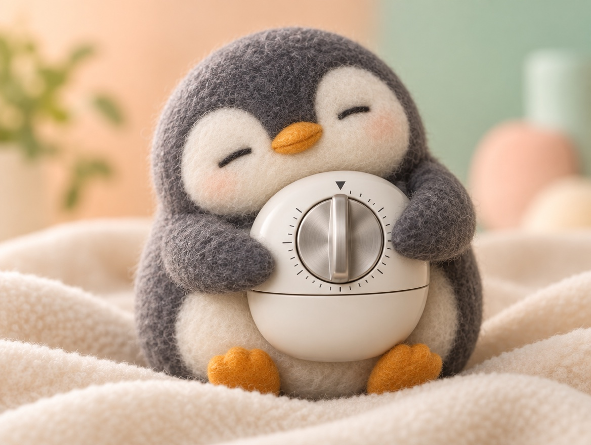

📝 DRAFT · 下書き — まだ本番に出していません · 下書き一覧
🐧 EVERYDAY LIFE⚡ 22 SEC
Calm your worry in 1 minute, like comforting a crying child 🐥

Two Hearts
They say we have an "adult heart" and a "3-year-old heart."
Crying Child
When I worry, that child is crying, so the adult me comforts it.
⚡ TRY IT
Calm the crying chick in 1 minute
Waaah! I am so worried!
Sniff… you understand me?
It is OK to feel this way?
A bath and early bed… OK!
Zzz… thank you.
60sec
🐥 Calm
When the time starts, tap the line again and again. Each tap is a gentle pat.
💛 Pats: 0
🐥💤 The chick fell asleep. 1 minute was enough!
💛 Pats: 0
Agree First
First, for 30 seconds, I agree: "I see, you are worried."
Say OK
Next, for 10 seconds, I say OK: "It is OK to feel worried."
Small Advice
In the last 20 seconds, I give real advice, like "Let's take a bath and sleep early."
📚 I learned this from the Japanese blog "Panda no Ondo".